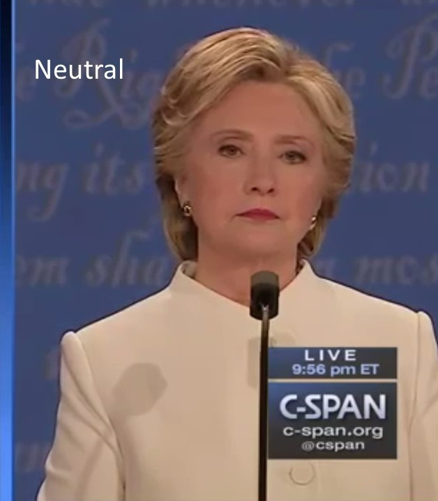
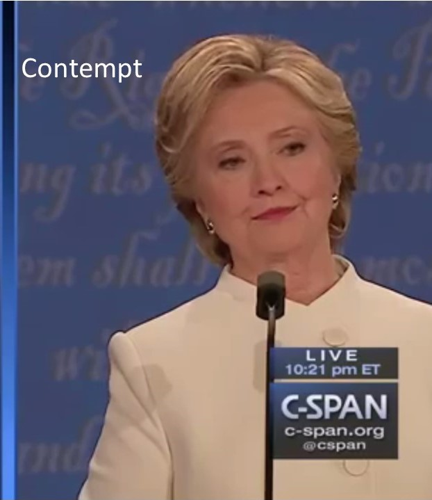
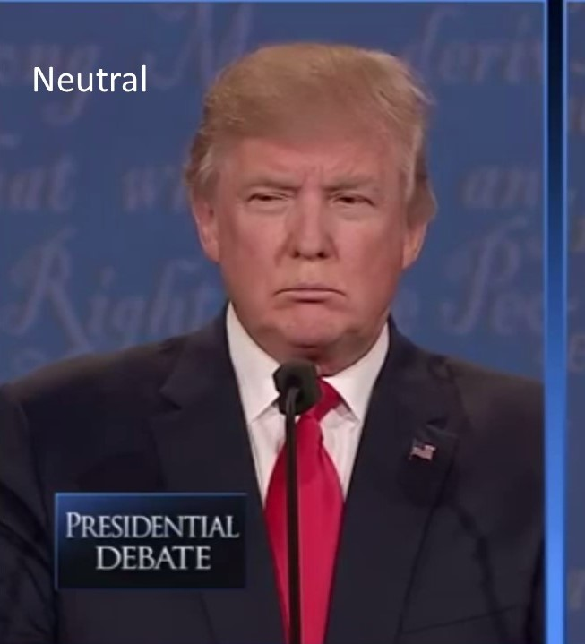
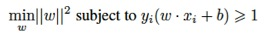
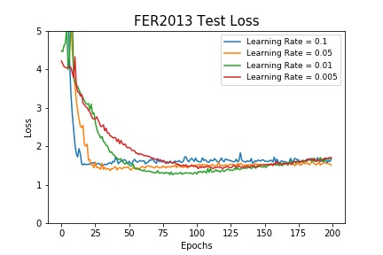
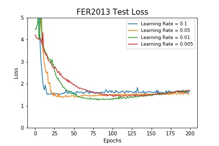
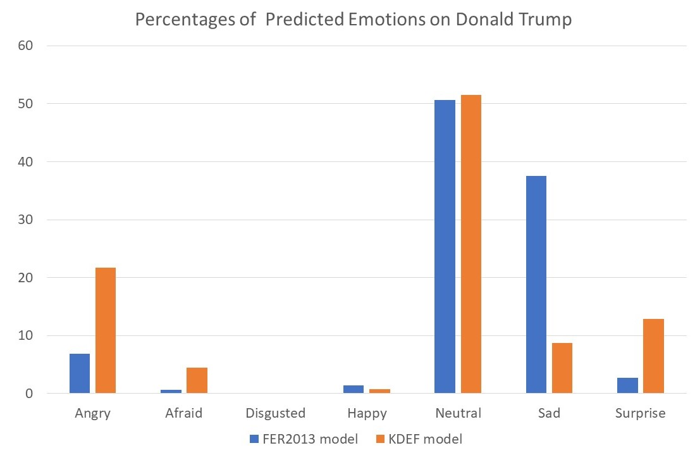
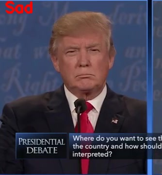
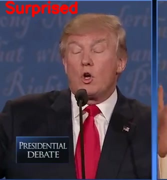
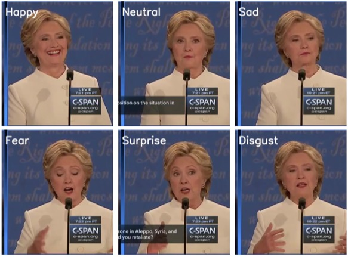

Davide Lucchi
Mona Jalal
Silvia Ionescu
12/7/2017
Given the video of a person classify the emotion that their face is showing in each frame. The algorithm will be applied to the videos of the 2016 presidential debate between Hillary Clinton and Donald Trump where each video shows only one candidate. Our target emotions are neutral, happy, sad, surprise, fear, disgust and anger.
Emotion recognition has many applications like smart home automation, self-driving cars, improving the classroom dynamics based on the students' emotions, and helping people with disabilities based on their perceived affections. Emotion/expression recognition is studied under the umbrella of affective computing as a way for the human-computer interaction (HCI) as well as human-robot interaction (HRI). Emotion recognition is one of the harder tasks in computer vision tasks spectrum with respect to achieved accuracy. The problem of emotion/expression recognition would be even harder when studied in other modalities like face sketches, face caricature and/or when special filters are applied that has deformed/malformed the face in a way detectable by a human and not probably a computer. Most of the efforts in the emotion recognition literature has been performed in normal human faces and only for a very few (7) emotions. Additionally, most of the research in the community has been geared towards winning the challenges for emotion recognition like EmotiW (Emotion Recognition in the Wild Challenge), DCER and HPE (Joint Challenge on Dominant and Complementary Emotion Recognition Using Micro-Emotion Features and Head-Pose Estimation), FERA (Facial Expression Recognition and Analysis Challenge), MEC ( Multimodal Emotion Recognition Challenge) [17], EmotiW 5.0 [18], and AVEC (Audio/Visual Emotion Challenge) [1]. All these challenges come up with their own dataset. Additional famous datasets for emotion recognition are FER2013, CK+, MMI facial expression database, KDEF [9] and AffectNet. In this project, we worked with FER2013, KDEF and AffectNet datasets. Overall, what makes a good dataset depends on various factors like having exposure to colored images of various age groups, ethnicity groups, and genders besides having cleaned and organized labels. Indeed one of the datasets that we came across (EmotionNet) which included the Facial Action Units encoding for each image, was very hard to work with and needed substantial data cleaning time compared to the other three datasets we worked with. We would additionally like to bring the attention of those who make datasets available to researcher to how easy-to-access datasets need to be. We had quite our share of numerous challenges for retrieving the 120GB AffectNet dataset. Additionally, FER2013, which we assume is the most prevalent dataset in the field, has very low-resolution images many of which include watermark in the images. These watermark potentially can degrade the prediction accuracy of machine learning and deep learning systems.
EmotiW [15] challenge goal is to provide a standard platform for emotion recognition. The first EmotiW (2013), brought the attention of researchers to emotion recognition in Acted Facial Expression in the Wild (AFEW). For example, the EmotiW 2013 winners used a deep neural network (DNN) method for detecting emotions. They used a convolutional neural network (CNN) for face analysis, bag of words method for analysing the mouth area, and use of deep belief networks for audio signal processing.In EmotiW 2015, a new emotion recognition challenge was introduced with the emerge of Static Facial Expression in the Wild (SFEW) database. SFEW database is extracted from AFEW database using a fiducial point-based clustering method. The EmotiW 2015 highest classification accuracy of 54% for AFEW and 62% for SFEW represents the needs for further research that needs to be done by the researchers in the field to improve the accuracy of emotion recognition. Reseachers have tried to improve the emotion recognition from various corners including enhancing the accuracy of face and face part detection which plays the most crucial role in emotion recognition, improving the head pose detection, as well as sorting out the problems with varied illumination, noise and lack of labeled data. The last problem has been focus of many recent works in which they have used crowdsourcing where they ask crowd-workers to label the face emotions in large amount as done in AffectNet. Some of the future meta-data that could be included in the datasets studied by researcher that could improve the accuracy of emotion recognition are as EEG, eye gaze estimation and eye gaze direction, and skin galvanic response. Moreover, recent attention has been geared towards group-level emotion recognition as in EmotiW 5.0 challenge in which they try to analyze the effect of a group of people in images.
Hillary Clinton and Donald Trump's Presidential Debate on October 19th, 2016
This dataset is given to us by Professor Margrit Betke's research group.
The video is modified so that the video is cropped in half so that we can see the individual candidates.
| Donald Trump | Hilary Clinton |
The output of the algorithm should be a set of scores of the emotion in the candidate's face. This scores represent the probability that the current espression is associated to that emotion. The scores are recomputed for each set of frames.
 |
 |  |
|  |  |
 |
Facial expressions are one of the most important non-verbal ways that human beings convey internal emotion. This means that there have been significant efforts to develop reliable automated face expression recognition (FER) systems that can understand human emotion and can interact with humans more naturally. One of the main problems for these systems is the fact that they have to operate in uncontrolled environments where the scene lighting, camera view, image resolution, background, users pose can have significant variations. With the rise of deep learning systems and big data systems, we are now able to have training data in the order of 500k image samples which are precisely annotated using multiple Amazon Mechanical Turk crowd workers for each image. Having large training dataset helps us with being able to shoot for very deep neural networks that can learn new patterns and detect emotions while the conventional computer vision algorithms or shallow neural networks might fail.
There have been a few models developed to quantify facial expressions and behaviors:
Datasets of facial expressions in the wild have received a spacial attention due to the uncontrolled environment setting that FER systems have be applied to.
The Facial Expression Recognition 2013 (FER-2013) datatset was introduced in the ICML 2013 challenge [11]. The database was created using the Google image search API that matched a set of 184 emotion-related keywords to capture the six basic expressions as well as the neutral expression. Images were resized to 48x48 pixels and converted to grayscale. Human labelers were used to reject incorrectly labeled images and filter out some duplicate images. The resulting database contains 35,887 images most of which are in the wild settings (collected from all over the Web). The downside of the FER-2013 dataset is that the faces are not registered, and only a small number of images portray disgust (547 images) hence the emotion distribution is not close to uniform, facial landmark detectors fail to extract facial landmarks at this resolution and quality. Winner of the FER challenge obtained a 71.2% accuracy on the test set by using CNNs with linear one-vs-all SVM classifier at the top.
AffectNet[3] is a large database containing more than 1M facial images collected from the Internet by querying three major search engines using 1250 emotion related keywords in six different languages. Half of the retrieved images (~440K) were manually annotated for the presence of seven discrete facial expressions (categorial model) and the intensity of valence and arousal (dimensional model).
Support Vector Machines (SVMs) and Convolutional Neural Networks(CNNs) were applied to the three datasets listed below. Action units were extracted from the KDEF and FER-2013 datasets and Support Vector Machines(SVM) was applied for classification. Convolutional Neural Networks (CNNs) were applied to Fer-2013 AffectNet.
| DataSet | Source | # of Images | Condition | Categories | KDEF | 4900 | Controlled/Posed | 7 emotions |
| FER-2013 | ICML 2013 challenge [11] | 35,887 | Wild | 7 emotions |
| AffectNet | Mollahosseini/Hasani/Mahoor[3] | 450,000 | Wild | 7 emotions |
Support Vector Machines (SVM) are deterministic supervised learning models used for classification. SVM classifies data by finding the best hyperplane that separates two classes while maximizing the margin between the two classes. The SVM optimization problem is shown below, where w is the weight vector, b is the bias and i = 1; ::;N
|  |
Convolutional Neural Networks(CNNs) architecture implemented was a VGG16 as shown below. The convolutional layers apply 3x3 filters to the images with the number of filters varying per layer, maxPooling layer has a pool size of 2, and the fully connected layer has a size of 512. Dropout layers of 0.4, batch normalization, and l2 regularization were applied to each convolutional layer.

For this part we started with a baseline SVM code [13] that detects emotion based on 68 facial landmarks. We implemented a SVM with facial action units. The Action Units were extracted with OpenFace [8] from the datasets FER2013 and Karolinska Directed Emotional Faces (KDEF). The KDEF dataset consists of 4900 pictures of 70 individuals each displaying 7 different emotional expressions. Each expressions is photographed from 5 different angles. The fact that the debate images have high resolution and that the candidates are for most of the time facing the camera under good lighting conditions suggest that a wild dataset is probably not needed to obtain a good emotion prediction accuracy and a simpler dataset like KDEF could be helpful enough. The AU output of OpenFace consists of a set of occurences and intensities one for each of the AU that OpenFace is able to recognize. You can refer to the Appendix section for an elaborate visualization of AUs and their relation to emotions. For some of the images given the position of person's face, it was not possible to calculate the AUs. This happened usually on side pictures where OpenFace was not able to recognize the face. This reduced even more the size of the dataset which in the end was 3022 images. The same problem occurred with the FER2013 dataset for which it was possible to generate only 5200 images. The reason about this is that the low-resolution of small size (48x48 pixels) images made it more difficult for OpenFace to generate the AUs and when this was not possible, no output file was created. For each dataset image the AUs were computed and the intensities and occurences values were put in a vector. The SVM training data consisted of a matrix with such vectors. The SVM used is a Support Vector Classification (SVC) from Python sklearn library with a rbf (radial basis function) kernel and ovr (One Vs Rest) classifier. The training and validation data were generated with the function train_test_split from sklearn in order to have a random sample.
Here are some of the landmark results created by OpenFace Docker container FaceLandmarkImg script on AffectNet dataset:Images with Correct Landmark
Images with Wrong Landmark
Model trained on FER2013
This model was trained on the AUs from the FER2013 website. The total data consisted of 5200 images. This data was divided into a train and test dataset where the test dataset comprised 15% of the images. The SVM was run with 10000 epochs and it gave a validation accuracy of 45.3% and a f1 score of 0.4218. This results represent an improvement over the baseline SVM we started with. Such SVM in fact was using facial landmarks to predict emotions and could achieve an accuracy of only 39.2% while being trained on the entire FER2013 dataset. The output model was then used to predict on the images from the debate. The video below is a collection of frames where the emotion has been predicted by the SVM.
Model trained on KDEF
The same method was used with this dataset. In this case the dataset consisted of 3022 images where the validation dataset comprised 15% of the total images. The code was run with 10000 epochs and it gave a validation accuracy of 67.4% and a f1 score of 0.6709. The output model was then used to predict on the images from the debate. The video below is a collection of frames where the emotion has been predicted by the SVM.
A. FER-2013 Dataset
The FER-2013 dataset consists of 35,887 images that are queried from the web. The data consists of 48x48 pixel grayscale images of faces. The faces have been automatically registered so that the face is centered and occupies about the same amount of space in each image. The task is to categorize each face based on the emotion shown in the facial expression in to one of seven categories (0=Angry, 1=Disgust, 2=Fear, 3=Happy, 4=Sad, 5=Surprise, 6=Neutral). The training set consists of 28,709 examples and test set has a size of 3,589 examples.
For the FER-2013 dataset, the VGG16 architecture(shown above) was implemented using Keras with tensorflow backend. This architecture was tested with both data augmentation and without using Keras ImageDataGenerator. Our test accuracy results increased from 60% to 65% with the data augmentation, therefore we continued to use data augmentation for our next optimization section. A rotation_range=15, width_shift_range=0.1, height_shift_range=0.1 was used for the image augmentation parameters.
The starting point in the CNN experimental setup was to test a range of leaning rates for the stochastic gradient descent optimizer. Fig. 2 shows the test accuracy and loss results for four different learning rates (0.1, 0.05, 0.01, 0.005) over 200 epochs. We noticed that the test accuracy increases as the learning rate decreases to 0.01 and 0.005, however we notice that the test loss for these two leaning rates starts increasing slightly after 150 epochs.
 

Because of the increase in the test loss for learning rates 0.01 and 0.005 after 150 epochs, we decided to try adding a 0.5 dropout layer and l2 regularization after each convolution layer. Fig. 3 below shows that the test accuracy remains the same ~ 68%, however the test loss has a smaller increase as the number of epochs increases. Due to this test results we decided to use a 0.5 dropout layer and l2 regularization in our architecture moving forward.
Due to the increase in test accuracy as the learning rate decreases, we decided to start with a learning rate of 0.1 and decrease it by half every 25 epochs. This was done in combination with a dropout layer, batch normalization, and l2 regularization at each convolution layer. This hyper-parameters setup gave us a test accuracy of 69.3%. Fig. 4 displays these results for the train and test accuracy and loss as a function of epochs. We notice from the figures below that our CNN are overfitting, however this issue could not be overcome by data augmentation, dropout layer or regularization.
B. AffectNet Dataset
AffectNet is a large dataset containing ~450,000(60GB) RGB images that were manually annotated, and taken in wild conditions, which means that are pulled from the web. This dataset has 11 categories for emotion classification (0=Neutral, 1=Happy, 2=Sad, 3=Surprise, 4=Fear, 5=Disgust, 6=Anger, 7=Contempt, 8=None, 9=Uncertain, 10=Non-face).
For the training set, we initially pulled ~210,000 images from only the first 8 classes of emotion (0=Neutral, 1=Happy, 2=Sad, 3=Surprise, 4=Fear, 5=Disgust, 6=Anger, 7=Contempt). These images were resized to 48x48 size, cropped to contain only the face, and transformed to grayscale. The test set had a size of 4,000 images with classifications belonging to the first 8 classes of emotion. Using the VGG16 network described earlier in combination with dropout layers, batch normalization, and l2 normalization we tried testing for different learning rates 0.1, 0.05, 0.001. The best test accuracy of 50% after 100 epochs is obtained using a learning rate of 0.05 for these hyperparameters, as shown in Fig. 5.
For AffectNet, we also tried using RGB images for training the CNN network. In order to speed up the training process, we pulled only 37k and 64k images for the training set from AffectNet representing only 8 classes and tested 2 different learning rates. The results for the RGB images are shown below and this setup gave us a test accuracy of 55%.
One every four frames was extracted from each input video and for each of them the SVM models were used to predict the emotion in that frame. The following tables illustrate the predictions obtained over a sample of 1372 frames from the debate.
|  |
The predictions highlight the differences and similarities between the two models. In particular, for Trump the biggest disagreement was between sad and angry. The FER model in fact interpreted most of the non neutral expressions as sad while the KDEF as angry. A few of such frames are shown below.
FER2013
|  |  |
KDEF
 |
 |
In this specific examples Trump's face seem to be more angry than sad and the results are consistent also in the other frames. The KDEF model therefore seems to be more accurate. The two models on the other hand agree on the neutral expression and seem to recognize them very accurately. Some examples are provided below.
Frames both models predicted as neutral
 |
Another important difference is in the surprised emotion. A sample of such pictures is given for both models.
FER2013
 |
 |  |
KDEF
 |
 |
Looking at the pictures it is possible to see that FER2013 is more accurate. Even though Trump's expression in that debate moment may be just a consequence of his way of talking the pictures do portray a surprised expression which the FER2013 model is able to recognize. KDEF instead performs poorly and predicts surprised even for pictures that are quite different from each other. This suggests that the model did not have enough training data for this emotion. A larger dataset would probably solve this problem. For Trump's emotions the results suggest that none of the two models is perfect. Better results could be achieved by merging the two datasets. For the surprised emotion it would be better to use only the images provided by FER2013 while for angry only the images of KDEF.
The same analysis can be carried out for Hillary Clinton as well. Here the biggest difference is betwen the sad and surprise emotions. Interestingly the values are about simmetric that is it seems that what FER predicted as sad KDFE predicted as surprise. This turned out to be not the case though. In fact, many of the pictures labeled as Sad by FER where labeled as Neutral by KDFE. This result explains the difference in the percentages of images classified as Neutral. A few examples are provided below.
FER2013
KDEF
 |
From these samples KDFE seems to be more accurate. Those faces in fact do not really portray sadness. The model trained on FER2013 therefore proved to be ineffective at classifing sadness as both Trump's and Hilary's images are misclassified. This could be due to the small number of sad faces in the training dataset which prevented the model to learn this emotion effectively. The two models on the other hand classify correctly neutral expressions. Some examples are provided below.
Frames both models predicted as neutral
 |
 |
The KDEF model classified almost 30% of the images as surprised. A sample is given below.
The first image does portray Surprise but the other two do not. This suggests that the model is actually able to classify correclty the images that show surprise but the false positives rate is very high. This information is consistent with the Trump images as well.
Gifs with results for FER2013 model
 |
 |
Gifs with results for KDEF model
 |
 |
Even if the expressions of Hilary Clinton and Donald Trump are quite different the two models behave in a consistent way. The most accurate emotions are Happyness and Neutral for both datasets. KDFE classifies Angry very well. As for Surprise the SVM trained on FER2013 behaves better in general but tends to have many false positives. It was not possible to test the correctness of Disgust and Fear as both candidates do not show such emotions. Both models labeled only very few images with Afraid and none with Disgust which suggests that the models do not assign those labels randomly but the data is not enough to make any conclusion.
As presented in the experimental setup section our CNN was better optimized for the FER2013 dataset(best test accuracy of 69%) compared to AffectNet(best test accuracy of 55%). Due to this reason we decided to use the FER2013 trained weights to classify the input videos of Hillary Clinton and Donald Trump. The hyper-parameters used to train the convolutional neural network weights on the FER2013 dataset are shown in the below.
| Hyper-parameter | Value |
| Learning Rate | Start at 0.1 and decrease every 25 epochs |
| Dropout Layer | 0.5 |
| L2 Regularization | 0.0005 |
| Batch size | 128 |
| Momentum | 0.9 |
| Rotation Range | 0.15 |
| Width Shift Range | 0.1 |
| Hight Shift Range | 0.1 |
As previously specified the FER2013 training set consists of 28,709 examples and test set has a size of 3,589 examples. The test accuracy for this dataset with thsese hyper-parameters was 69.3%. The test accuracy results are shown in Fig. 4 and the confusion matrix results for each individual emotion are shown below in Fig. 7.
As we can see from the confusion matrix, the sad and fear emotion classification have the lowest accuracy. We noticed that the sad classification is often misclassified as fear or neutral and that the fear classification is most often misclassified as sad and neutral.
Using the trained weights from the FER2013 dataset we classified the input images of Hillary and Trump. A sample of our classification results for Hillary Clinton are shown below.
|  |
The image classification for Hillary Clinton for the neutral, happy, surprised, and disgust classification work well, however the fear and sad classification seam not properly classified.
A sample of our classification results for Donald Trump have also been performed and are shown below.
 |
For the Donald Trump image classification, the angry and sad classified images look very similar. Also, the image classified as surprised looks more angry to us.
FER2013 CNN results
| Hilary Clinton | Donald Trump |
Emotion recognition could have many applications like smart home automation, self-driving cars, improving the classroom dynamics, and helping people with disabilities based on their perceived affections. However, emotion detection and classification is a difficult problem to tackle since humans express emotion in complex and diverse ways. We have attempted to classify emotion through two methods: Action Units/SVM and Convolutional Neural Networks.
Action units were extracted from two datasets FER2013 and KDEF and classified using Support Vector Machines(SVM). For the FER2013 dataset we obtained validation accuracy of 45.3% and a f1 score of 0.4218. The KDEF dataset performed better with a validation accuracy of 67.4% and a f1 score of 0.6709 after 10000 epochs. The KDEF dataset performed better because the images were taken in a controlled/posed setting as opposed to the FER2013, which is a wild dataset.
For the Convolutional Neural Network method, two datasets were tested FER2013 and AffectNet. We decided not to try it on KDEF datased due to the small number of images in this datasest(4,900), which would have had to be split into training and testing sets. In terms of the datasets that we used, the FER2013 had test accuracy of 69.3% using grayscale images. For AffectNet, we obtained a test accuracy of 55% using RGB images. The reason for this difference in results while applying the same convolutional neural network architecture and similar hyperparameters is because we used 8 emotion classes for AffectNet as opposed to 7 emotion classes for FER2013. This could also mean that the CNN hyper-parameters were not optimized for the AffectNet dataset and that more parameter tuning needed to be performed. AffectNet is a much bigger dataset ~450, 000 images and even thou these images were manually annotated it could be that some of them were misclassified. Also, since AffectNet images were collected from the Internet by querying three major search engines using 1250 emotion related keywords in six different languages, it is possible that the classes of emotions are providing a wider range of images for that emotion the FER2013. This could mean that we need to implement a different type of CNN architecture, such as Resnet50, in order to increase our accuracy.
As a final conclusion, for the FER-2013 dataset the CNNs performed better then SVMs and action units. The hyper-parameter tunings for the CNNs affect our results significantly and the results from one dataset to another one are not transferable by default.
Division of work:
Davide: Action units extraction and classification using SVM for FER2013 and KDEF datasets, FER-2013 emotion classification using 3 layer CNNs.
Mona: Acquiring and cleaning AffectNet Dataset, Setting up OpenFace Cambridge Docker on CentOS, Extracting AUs and landmarks from OpenFace for 500k AffectNet dataset, setting up and running the baseline SVM on FER2013 dataset, taking care of the debate video, related work study.
Silvia: FER2013 emotion classification using 3 layer CNNs and VGG16, AffectNet using VGG16.
Below tables are from [14].
| Action Unit | Description | Facial Muscle | Example |
| 1 | Inner Brow Raiser | Frontalis, pars medialis |  |
| 2 | Outer Brow Raiser (unilateral, right side) | Frontalis, pars lateralis |  |
| 4 | Brow Lowerer | Depressor Glabellae, Depressor Supercilli, Currugator |  |
| 5 | Upper Lid Raiser | Levator palpebrae superioris |  |
| 6 | Cheek Raiser | Orbicularis oculi, pars orbitalis |  |
| 7 | Lid Tightener | Orbicularis oculi, pars palpebralis |  |
| 9 (also shows slight AU4 and AU10) | Nose Wrinkler | Levator labii superioris alaquae nasi |  |
| 10 (also shows slight AU25) | Upper Lip Raiser | Levator Labii Superioris, Caput infraorbitalis |  |
| 12 | Lip Corner Puller | Zygomatic Major |  |
| 14 | Dimpler | Buccinator |  |
| 15 | Lip Corner Depressor | Depressor anguli oris (Triangularis) |  |
| 17 | Chin Raiser | Mentalis |  |
| 20 | Lip stretcher | Risorius |  |
| 23 | Lip Tightener | Orbicularis oris |  |
| 25 | Lips part | Depressor Labii, Relaxation of Mentalis (AU17), Orbicularis Oris |  |
| 26 | Jaw Drop | Masetter; Temporal and Internal Pterygoid relaxed |  |
| 28 | Lip Suck | Orbicularis oris |  |
| 45 | Blink | Relaxation of Levator Palpebrae and Contraction of Orbicularis Oculi, Pars Palpebralis. |  |
Each emotion can be associated to a set of AUs. Some examples are given in the table below.
| Emotion | Action Units | Description | Examples (Hover to Play) |
| Happiness / Joy | 6 + 12 | Cheek Raiser, Lip Corner Puller |
|
| Sadness | 1 + 4 + 15 | Inner Brow Raiser, Brow Lowerer, Lip Corner Depressor | 
|
| Surprise | 1 + 2 + 5 + 26 | Inner Brow Raiser, Outer Brow Raiser, Upper Lid Raiser, Jaw Drop |
|
| Fear | 1 + 2 + 4 + 5 + 7 + 20 + 26 | Inner Brow Raiser, Outer Brow Raiser, Brow Lowerer, Upper Lid Raiser, Lid Tightener, Lip Stretcher, Jaw Drop |
|
| Anger | 4 + 5 + 7 + 23 | Brow Lowerer, Upper Lid Raiser, Lid Tightener, Lip Tightener |
|
| Disgust | 9 + 15 + 16 | Nose Wrinkler, Lip Corner Depressor, Lower Lip Depressor | 
|
| Contempt | 12 + 14 (on one side of the face) | Lip Corner Puller, Dimpler | 
|